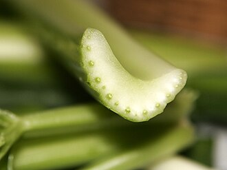

セロリの生産量 都道府県ランキング
1位から3位までと、とれた量
セロリが日本でいちばん多くとれるのは長野県です。1万2,000 tで、全国（2万8,900 t）の42%を占めます。

| 順位 | 都道府県 | 収穫量 | 全国に占める割合 |
|---|---|---|---|
| 1位 | 長野県 | 1万2,000 t | 42% |
| 2位 | 静岡県 | 5,520 t | 19% |
| 3位 | 福岡県 | 3,510 t | 12% |
この数字について
- 分類：セリ科
- 全国の収穫量：2万8,900 t
- この数字が表すもの：収穫量（畑や田でとれた重さ）
- 調査：作物統計調査 作況調査（野菜） 令和6年産
- 7県分を調査（調査していない県は順位に入りません）
セロリの生産量について、よくある質問
- セロリの生産量が日本一の都道府県はどこですか？
- 長野県です。作物統計調査 作況調査（野菜）（令和6年産）で1万2,000 tでした。
- セロリの生産量ランキング2位・3位はどこですか？
- 2位は静岡県（5,520 t）、3位は福岡県（3,510 t）です。
- セロリの全国の生産量はどれくらいですか？
- 2万8,900 t（令和6年産）です。